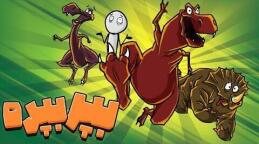

اگر همه دایناسورها با هم بپرند چه میشود؟

اگر همهٔ دایناسورهای دنیا یکجا جمع میشدند و همزمان روی زمین میپریدند، چه میشد؟ خیلی باحال است. یک صحنهٔ کاملاً هالیوودی را تصور کن؛ از تیرانوسورهای غول تا دایناسورهایی کوچکتر از یک مرغ امروزی، همه سر و صدا میکنند و برای یک پرش بزرگ آماده میشوند.
میخواهیم تعداد تقریبی دایناسورهای گذشته، وزن احتمالیشان، مساحت لازم برای جمع کردنشان، ضخامت پوسته در همان نقطه، و در آخر اثر این پرش عظیم روی سیارهٔ عزیزمان را ببینیم.
چند دایناسور روی زمین بودهاند؟
شمار دقیق دایناسورهایی که از حدود ۲۳۰ تا ۶۶ میلیون سال پیش زندگی کردهاند غیرممکن است. میلیونها نسل آمدهاند و رفتهاند. دانشمندها میگویند شاید هزاران گونه بوده و در هر دوره شمارشان به میلیاردها میرسیده. الان حدود ۸ میلیارد آدم روی زمین است و میانگین وزن هر کدام نزدیک ۷۰ کیلو؛ دایناسورها اما خیلی سنگینترند. برای همین عدد یک میلیارد را فرضی برمیداریم.
چقدر وزن داشتهاند؟
از لحاظ وزن خیلی متنوع بودهاند. غولهایی مثل آرژانتینوسوروس حدود ۷۰ تن بودهاند و دایناسورهای ریز حتی کمتر از یک کیلو. اگر بخواهیم یک میانگین تقریبی بگیریم، وزن متوسط یک دایناسور فرضی را حدود یک تن میگذاریم. این عدد یک جور میانگین ساده است بین آن غولهای چنددهتنی و مینیدایناسورهای سبک؛ فقط برای اینکه حساب کردن راحت باشد.
اندازهها هم از چند متر تا دهها متر فرق داشته. باز میانگین میگیریم و فرض میکنیم هر کدام یک مربع ۲ در ۲ متر را اشغال کند. میشود ۴ میلیارد متر مربع، یعنی ۴۰۰۰ کیلومتر مربع.
۴۰۰۰ کیلومتر مربع چقدر است؟ جزیرهٔ مادیرا در پرتغال حدود ۸۰۰ کیلومتر مربع است، پس این مساحت نزدیک پنج برابر آن جزیره میشود. در مقیاس یک کشور بزرگ، منطقهٔ نسبتاً کوچکی است؛ بخشی از یک ایالت آمریکا یا تکهای از دشتهای استرالیا میتواند همه را جا بدهد. ما یک بخش ۴۰۰۰ کیلومتری از بیابانهای مرکزی استرالیا را محل گردهمایی انتخاب میکنیم.
پوسته آنجا چقدر ضخیم است؟
حالا سؤال این است که عمق پوسته در همان نقطه چقدر است و آیا چنین نیرویی را تحمل میکند. در مناطق قارهای ضخامت پوسته بین ۳۰ تا ۵۰ کیلومتر است. برای استرالیا میشود حدود ۳۵ کیلومتر در نظر گرفت.
گفتیم هر دایناسور میانگین یک تن وزن دارد. با شتاب گرانش ۹٫۸ متر بر مجذور ثانیه، نیروی وزن یکی از آنها حدود ۱۰ هزار نیوتن است. برای یک میلیارد تا، این تازه فقط وزن ایستادهشان است. وقتی میپرند، دو تا سه برابر وزن خودشان را به زمین وارد میکنند. اگر سه برابر بگیریم، به نیرویی حدود ۳ × ۱۰۱۳ نیوتن میرسیم. عدد خیلی بزرگی است. به محض پرش، صدای گوشخراش و خیلی خیلی بلندی بلند میشود؛ چیزی در حد انفجارهای واقعاً بزرگ.
زمین زیر پایشان دوام میآورد؟
به نظرت زمین چنین فشاری را تحمل میکند؟ گفتیم پوسته آنجا حدود ۳۵ کیلومتر ضخامت دارد. بچهها، پوسته یک لایهٔ جامد و پایدار است که نیروهای خیلی عظیمتر را هم تاب میآورد؛ فشار حرکت صفحهها، فوران آتشفشان و زمینلرزههای بزرگ، همه شدیدتر از ضربهٔ این پرش جمعیاند، حتی با جمعیت یکمیلیاردی.
البته بیاثر هم نیست. احتمالاً یک موج لرزهای ضعیف درست میشود، طوری که لرزهنگارهای دقیق بتوانند اندازهاش را بگیرند. اما این موج در مقیاس زمین واقعاً ناچیز است. جرم زمین حدود ۵٫۹۷ × ۱۰۲۴ کیلوگرم است؛ عدد خیلی بزرگی. حتی یک زمینلرزهٔ متوسط پنج ریشتری انرژی خیلی بیشتری از این پرش دارد.
متأسفانه این پرش جز یک صدای مهیب چیز دیگری ندارد. نه تنها پوسته را نمیشکافد، روی محور زمین و چرخشش هم کوچکترین اثری نمیگذارد. مثل این است که صدها مورچه بخواهند روی یک کامیون بپرند و تکانش بدهند؛ اصلاً تأثیری ندارد. حتی اگر آن یک میلیارد را به ده میلیارد برسانیم، باز هم زمین را تکان نمیدهند و فقط صدای مهیبتری درمیآورند.
پس صحنه هالیوودی میماند، غبار پا میشود، گوشها زنگ میزنند، ولی سیاره همان سیاره است. تا فکر بعدی، کنجکاو بمان.